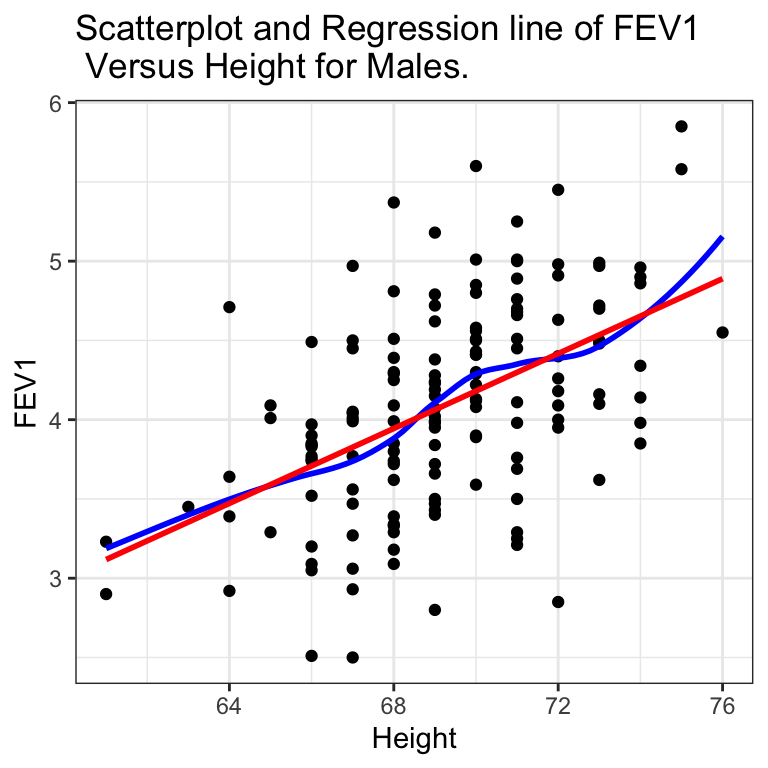
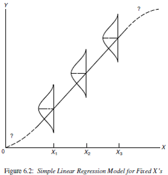
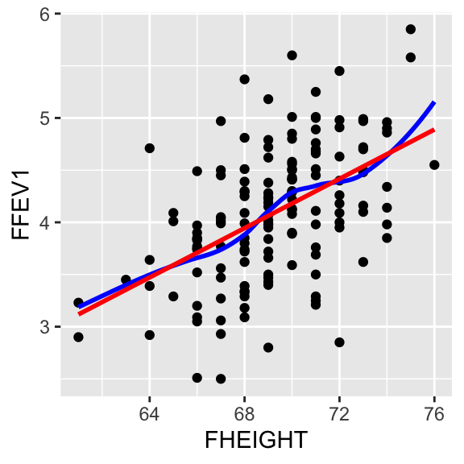
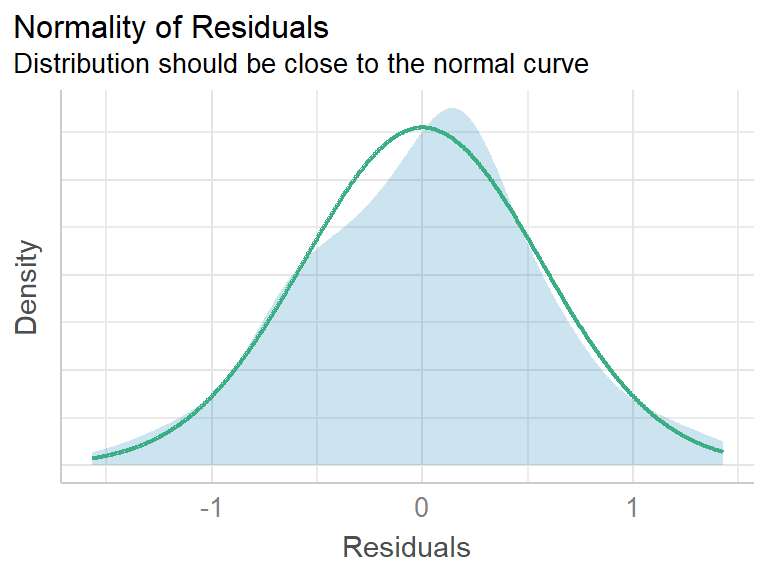
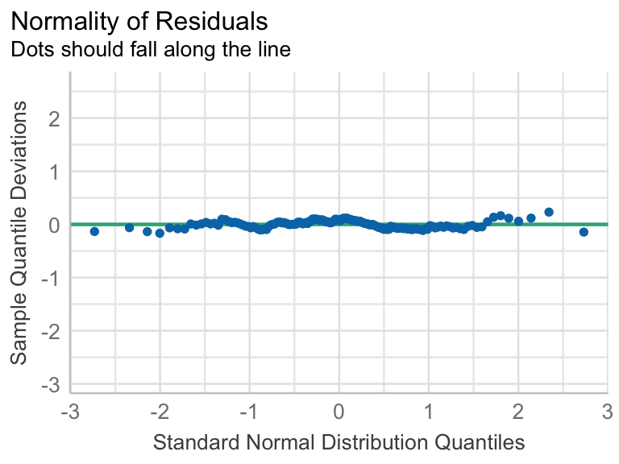

Show the code

2024-10-28
Both Regression and Correlation can be used to
Lung function data were obtained from an epidemiological study of households living in four areas with different amounts and types of air pollution. The data set used in PMA6 is a subset of the total data. In this example we use only the data taken on the fathers, all of whom are nonsmokers.
One of the major early indicators of reduced respiratory function is FEV1 or forced expiratory volume in the first second (amount of air exhaled in 1 second). Since it is known that taller males tend to have higher FEV1, we wish to determine the relationship between height and FEV1. We can use regression analysis for both a descriptive and predictive purpose.
There does appear to be a tendency for taller men to have higher FEV1. Since this relationship is reasonably linear (the blue loess line is similar to the red linear line) we can write the model the population average FEV \(\mu_{y}\) as a linear function of height \(x\):
\[ \mu_{y} = \beta_{0} + \beta_{1}x \]
The intercept parameter, \(\beta_{0}\), represents where the line crosses the y-axis when \(x=0\). The slope parameter, \(\beta_{1}\), represents the change in \(\mu_{y}\) per 1 unit \(x\).
We know that there is always random noise in real data (DATA = MODEL FIT + RESIDUAL) so we introduce a random error term, \(\epsilon_{i}\) and assume the model:
\[ y_{i} = \beta_{0} + \beta_{1} X + \epsilon_{i} \\ \epsilon_{i} \sim N(0, \sigma^{2}) \]
This model states that the random variable \(y\) to be made up of a predictable part (a linear function of \(x\)) and an unpredictable part (the random error, \(\epsilon_{i}\)). The error (residual) term includes the effects of all other factors, known or unknown.
The estimates \(b_{0}\) and \(b_{1}\) are found such that they minimize the sum of the squared residuals (the unexplained residual error)
\[ \sum_{i=1}^{n} \epsilon_{i} \]
For simple linear regression the regression coefficient estimates that minimize the sum of squared errors can be calculated as:
\[ \hat{\beta_{0}} = \bar{y} - \hat{\beta_{1}}\bar{x} \quad \mbox{ and } \quad \hat{\beta_{1}} = r\frac{s_{y}}{s_{x}} \]
where \(r\) is the correlation coefficient between \(x\) and \(y\).
Go to: https://paternogbc.shinyapps.io/SS_regression/. Then turn and talk to your group about the following features of the Sum of Squares Graphs
Total
Regression
Error
Looking at it this way, we are asking “If I know the value of \(x\), how much better will I be at predicting \(y\) than if I were just to use \(\bar{y}\)?
A linear model using least squares estimation can be performed in R using the function lm(y ~ x)
Call:
lm(formula = FFEV1 ~ FHEIGHT, data = fev)
Coefficients:
(Intercept) FHEIGHT
-4.0867 0.1181 The regression equation for the model to explain FEV1 using height as a predictor is:
\[ \hat{y} = -4.087 + 0.118x \]
\[ \hat{y} = -4.087 + 0.118x \]
The mathematical model that we use for regression has these features that translate into assumptions.
\[ \begin{align} Y|X & \sim N(\mu_{Y|X}, \sigma^{2}) \\ \mu_{Y|X} & = \beta_{0} + \beta_{1} X \\ \sigma^{2} & = Var(Y|X) \end{align} \]




These plots are generated from the performance package.
Caution!
The linear model is only valid within the range of the data used to fit the model
To take an extreme example, suppose a father was 2 feet tall. Then the equation would predict an impossible negative value of FEV1 (\(-1.255\)).
A safe policy is to restrict the use of the equation to the range of the \(X\) observed in the sample.
\[ \hat{\beta}(y, x) \sim \mathcal{N}(\beta, \mathbf{x^{T}x}^{-1}\sigma^{2}) \]
\[ b_{p} \pm 1.96*SE(b_{p})\]
point estimate \(\pm\) critical value * standard error of estimate
But calculating the variance of \(b_{p}\) involves \(\mathbf{x^{T}x}^{-1}\sigma^{2}\), which is outside the scope of this class. So, we use R functions
We can be 95% confident that the true slope parameter between a fathers height and his FEV1 is contained in the interval (0.085, 0.151).
Let \(\beta_1\) be the true slope parameter that describes the change in FEV1 as a function of height in cm.
| term | estimate | std.error | statistic | p.value |
|---|---|---|---|---|
| (Intercept) | -4.087 | 1.152 | -3.548 | 0.001 |
| FHEIGHT | 0.118 | 0.017 | 7.106 | 0.000 |
The p-value for \(b_{1}\) is <.0001, so there is sufficient evidence to believe that there is a linear relationship between FEV1 and Height of fathers.
Base R (ish)
Conclusion
Each 1cm increase in height of a father is associated with a significant increase of 0.118 (0.09, 0.15) L of FEV1 (p<.0001). Height explains 25.4% of the variation in FEV1.
🔗 https://math615.netlify.app / Linear Regression